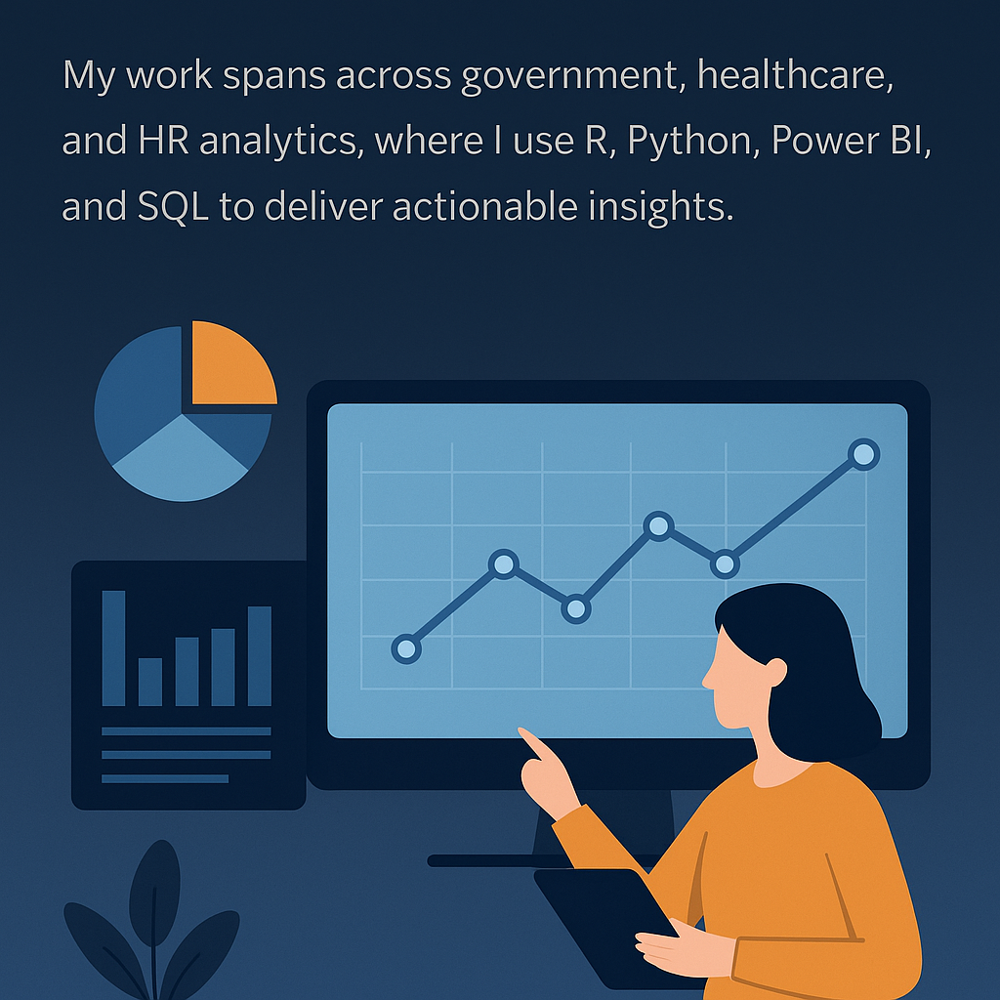

About Me

About me: I'm a Data Analyst with an MSc in Statistics and an MBA. I’ve worked in government, healthcare, and HR analytics, using R, Python, Power BI, and SQL to generate actionable insights and drive decisions.
Education:
- MSc in Statistics with Medical Applications – University of Sheffield
- MBA in International Business – Anglia Ruskin University
- BSc Hons in Actuarial Science – University of Kent at Canterbury
Skills
Languages & Tools
R
Python
SQL
Power BI
Excel
Git
Statistical Methods
GLM / ANOVA
Predictive Modelling
Regression Analysis
Survival Analysis
Geospatial Analysis
Data Visualisation
Sectors
Government / Public Sector
Healthcare / NHS
HR Analytics
Insurance
Environmental
Research

Key projects across government, healthcare, and industry.
Pay Equity Analysis — DEFRA
Led analysis of pay disparities across gender, ethnicity, age, and grade using GLM and ANOVA; built statistical models and dashboards to support HR policy and equity strategy.
Population Estimates — ONS
Contributed to Admin-Based Population Estimates team, building models from census and administrative datasets in R to support national statistics.
Environmental Data Analysis — Map Impact
Used geospatial and remote sensing data to analyse environmental patterns, including correlation between temperature and algal blooms in Windermere Lake.
Healthcare Risk Modelling — OBH
Analysed NHS Digital and EHR data, producing mortality risk forecasts for COVID-19 using statistical and predictive modelling techniques.
Public Health Reporting — UKHSA
Automated weekly NHS Test & Trace statistical reports; queried large datasets with SQL to generate critical pandemic insights.
Customer Churn & Business Analytics — Domestic & General
Applied statistical techniques to identify drivers of customer churn and developed Power BI dashboards for business trend analysis.
Vehicle Safety Modelling — Thatcham Research
Modelled motor insurance claims to assess impact of Autonomous Emergency Braking on accident rates; findings published at ESV conference.
Publications
📄
AEB Performance in the UK: A Decade of Development (2017)
Presented at the 25th International Technical Conference on the Enhanced Safety of Vehicles (ESV).
Contact